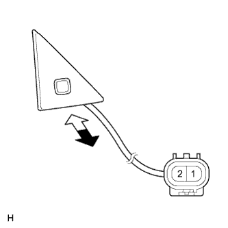

GLASS HATCH OPENER SWITCH > INSPECTION |
| 1. INSPECT GLASS HATCH OPENER SWITCH ASSEMBLY |
|  |
Measure the resistance according to the value(s) in the table below.
| Tester Connection | Switch Condition | Specified Condition |
| 1 - 2 | Switch free | 10 kΩ or higher |
| 1 - 2 | Switch pushed | Below 1 Ω |
 | Free |
 | Pushed |